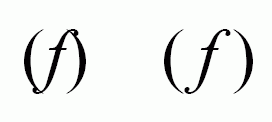
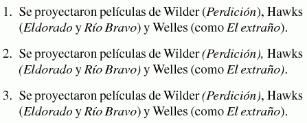

Los paréntesis
Y cómo se combinan con las cursivas
Revisado: 2007-05-02
Función
La principal función de los paréntesis es delimitar una observación, un dato o una aclaración en un texto. En este cometido, las rayas están ganando terreno en los últimos años y a menudo, incluso tal vez en exceso, reemplazan a los paréntesis.
Todo paréntesis de abrir debe cerrarse. Sin embargo, no todo paréntesis de cierre tiene su correspondiente signo de apertura; el segundo caso se da en enumeraciones, como «_a_) lo primero, y b) lo segundo».
Paréntesis con cursivas
Un problema tipográfico es qué hacer con los paréntesis si el texto que contienen está en cursiva, en todo o en parte. La razón de ello se muestra en la siguiente figura:
La f minúscula es la letra con más volado y en la que mejor se ve la dificultad de emparejar la cursiva con paréntesis de redondo, pero de hecho todas las letras cursivas presentan algún desajuste, en menor o mayor grado.
Las dos soluciones aplicadas con más frecuencia en España hasta no hace mucho son:
1) los paréntesis son siempre de redonda y se añade algo de espacio de ser necesario;
2) los paréntesis son de redonda si van pegados a una letra redonda y de cursiva si van pegados a una letra cursiva.
Cualquiera de estos dos sistema soluciona de forma coherente el problema del encuentro de dos letras que se superponen: en el primero con la adición de una corrección del espaciado (en TEX se conoce italic correction o corrección de cursiva) y en el segundo con el empleo de un signo que por su forma no presente el riesgo de superposición.
Los libros de tipografía como los de Morato (1908) y Martínez Sicluna (1945) no son sistemáticos y según la página se aplica una solución u otra. El de corrección de Fernandez Castillo (1956) o Cómo se hace un libro de Euniciano Martín (1983) emplea siempre la 2. Reciéntemente pasó por mis manos una edición de la gramática de Bello, de cuidada composición, que empleaba siempre la 1.
Todo parece indicar que lo único que importaba a menudo era despachar un problema de orden práctico y que el cajista de turno aplicaba lo que creia más oportuno. Aunque no parece que la falta de uniformidad o de estética preocupara mucho en estos libros, sino que sólo interesaba la pura mecánica de ajustar dos letras, en otros muchos se puede ver aplicada de forma sistemática alguna de las dos opciones anteriores.
Otra norma de reciente aparición es:
3) si el texto entre paréntesis está completamente de cursiva, los paréntesis van de cursiva, y si hay alguna de letra de redonda, aunque sea una, va de redonda.
Veamos ahora ejemplos y la posible aplicación de estas tres posibilidades:

- La solución 2, que es la más fácil de aplicar, ha sido casi completamente abandonada, tal vez por su falta de uniformidad y porque lo único que hace es trasladar el problema de espaciado fuera de los paréntesis (donde se sigue dando, aunque se note menos).
- Desde el punto de vista de la uniformidad, la solución primera es las más adecuada, y si antiguamente en obras cuidadas se tomaba la molestia de ajustar el espaciado, ahora esta posibilidad parece casi obligada, pues los sistemas digitales permiten el ajuste con mucha más facilidad. Es una tendencia dominante, defendida, por ejemplo, por Robert Bringhurst, que además recuerda que las primeras fuentes cursivas tenían los paréntesis de redondo (lo que tal vez explique que en España esta opción haya sido tan frecuente).
- La tercera opción parece difícil de justificar, pues no tiene relación con el problema planteado: si se aplican las correcciones de cursiva, no hay necesidad de pasar a cursiva el paréntesis (es decir, no hay por qué aplicar dos correcciones), y si no se aplican las correcciones, el problema persiste.
Una cuarta opción, procedente de Francia y que se empleó en España en ocasiones es:
4) si el texto entre paréntesis comienza y termina en cursiva, con independencia de si hay redonda o no en el resto de palabras, los paréntesis van de cursiva; en caso contrario, van de redonda.